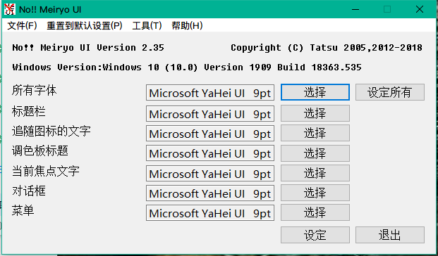
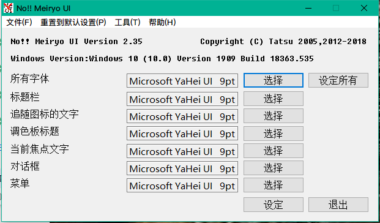

2.1 开始
从资源管理器对noMeiryoUI.exe的图标  进行双击，请实行noMeiryoUI.exe。
进行双击，请实行noMeiryoUI.exe。
下记的画面会表示出来。
Windows的版本的制品名(内部版本番号)的形式进行表示。动作确认，障害报告等请进行利用。

从资源管理器对noMeiryoUI.exe的图标  进行双击，请实行noMeiryoUI.exe。
进行双击，请实行noMeiryoUI.exe。
下记的画面会表示出来。
Windows的版本的制品名(内部版本番号)的形式进行表示。动作确认，障害报告等请进行利用。

画面表示和画面的各部分的名称与在被设定的字体名被表示出来。
字体涓的时候字体名的横向选择按钮请押下。
字体选择对话框被表示出来后、字体、字体尺寸、书式请用偏好的形式进行设定。
设定结束后OK按钮押下后选择的字体的画面的各部分会被设定。
选择中的字体的字体名"@"开始的字体存在的场合时选择的字体是否是真的意图的询问对话框会被表示出来。
询问对话框表示出来的场合的话「不要」押下后字体选择不会执行。「好的」押下后字体会被设定。
一番上表示的「全部的字体」的项目是画面的各部分的相同字体的字体、字体、尺寸、书式的设定的项目。
字体名的横的选择按钮押下后、字体选择对话框从字体选择后、设定全部按钮押下后画面的各部分的字体，相同的字体、字体尺寸、书式被设定了。
被选择的字体的字体名"@"开始的场合，被选择的字体是真的意图吗的询问对话框会进行显示。
询问对话框被表示的场合「不要」押下后字体选择不会执行。「要」押下后字体会被设定。
字体名的横选择按钮押下后，下记的字体选择对话框会表示出来。

字体选择对话框可以做以下的指定。
| 名称 | 机能 |
|---|---|
| 字体名称(F) | 字体的指定。 |
| 样式(Y) | 字体的样式(粗体/斜体)的指定。 |
| 字体大小(S) | 字体尺寸的指定。 |
| 下划线(U) | 记号的下划线进行添付。 |
| 删除线(T) | 记号的删除线进行安置。 |
选择字体后按下OK按钮就选择字体。
选择必须的个所的无法选择的场合、错误信息表示出来时请按指示进行选择。
从指定命令行到起动时可以载入字体设置，选择指定字体设置自动设置系统字体。
命令行的格式是以下的通用的。
noMeiryoUI 字体设定文件名 [-set]
字体设定文件本程序字体设定保存的ini指定文件。。
字体设定文件名空白含有的场合文件名"请在（双引号）括起来。
字体设定文件名的后空白输入-set用被指定的字体设定文件的内容设定系统字体结束程序。
批次文件等使用的和事先准备的字体设定文件内容的系统字体设定可以一发很方便。
MySet.ini的字体设定文件在启动时的情况下，从命令提示等以下输入。
noMeiryoUI MySet.ini
Your Settings.ini如果将系统字体字体称为配置文件，从这些输入下面的命令提示符。
noMeiryoUI "Your Settings.ini" -set